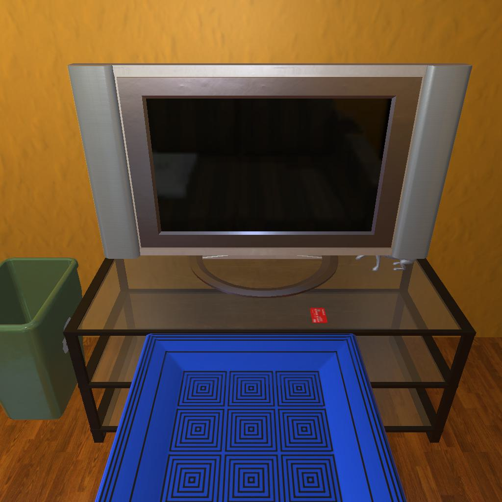

---------------------------------------------------------task: 3---------------------------------------------------------
--------------------------------------------------------------------------------------------------------------------------------------------------------------------
--------------------------------------------------------------------------------------------------------------------------------------------------------------------
Step:--------------------------------------------------------------------------17-------------------------------------------------------------------------------
----------------------------------------
VLM Prompt:
Image1:
Image2:
Image3:
**Instruction**
1. Analyze the provided images to identify all visible household objects and compare the difference between images (e.h. whether the object is opened or not and taken on hand or not), focusing on those relevant to the task description "examine the plate with the floorlamp."
2. Use the analysis of images and the task hint "The agent must find an object of the desired type, locate and turn on a light source with the desired object in-hand." to answer the question: what is the most reasonable action in the choices for the task description "examine the plate with the floorlamp"?
3. Decide and write the answer using the template: The answer is: (i): , where i is the real number. If there is no desired object in images, search every place based on **Initial Observation** to find the object. And if no one is exactly correct, choose a similar answer.
**Initial Observation**
You are in the middle of a room. Looking quickly around you, you can see armchair (1), garbagecan (1), tvstand (1), shelf (1-5), sofa (1), coffeetable (1), sidetable (1-2), drawer (1)
**Answer Choices**
(1): go to armchair 1
(2): go to garbagecan 1
(3): go to tvstand 1
(4): go to shelf 2
(5): go to sofa 1
(6): go to sidetable 1
(7): go to sidetable 2
(8): go to drawer 1
(9): go to shelf 3
(10): go to shelf 4
(11): go to shelf 5
(12): put plate 1 in/on coffeetable 1
(13): use floorlamp 1
(14): examine plate 1
(15): examine coffeetable 1
**Answer**
Let's think step by step by following the instructions.
----------------------------------------
----------------------------------------
Original Response:
First, we need to identify all visible household objects in the images provided. In the images, we can see a sofa with a remote control and some papers, a floor lamp next to the sofa, a coffee table with a blue decorative item on it, and a TV on a TV stand. There is also a shelf with books and a small side table with a plant.
Now, focusing on the task description "examine the plate with the floorlamp," we need to find the plate and the floor lamp. The floor lamp is visible next to the sofa in images 1 and 3. However, there is no plate visible in any of the images.
Based on the task hint, we need to find the plate, locate and turn on the light source (floor lamp) with the plate in hand. Since the plate is not visible in the images, we need to search other places based on the initial observation.
The most reasonable action would be to search the locations where the plate could be, such as the shelf, the side table, or the drawer. Since the floor lamp is already located next to the sofa, we do not need to go there. Out of the answer choices, going to the drawer seems the most likely place to find a plate.
The answer is: (8): go to drawer 1.
----------------------------------------
----------------------------------------
>>> Refine Original VLM Response and Get Pure Action: go to drawer 1
----------------------------------------
-----------------------------------------------------------------
Running time: 14.885188579559326 seconds
Total Money: 1.46763
-----------------------------------------------------------------
-----------------------------------------------------------------
Text Observation:You arrive at loc 9. The drawer 1 is closed.
-----------------------------------------------------------------
UNSUCCEED